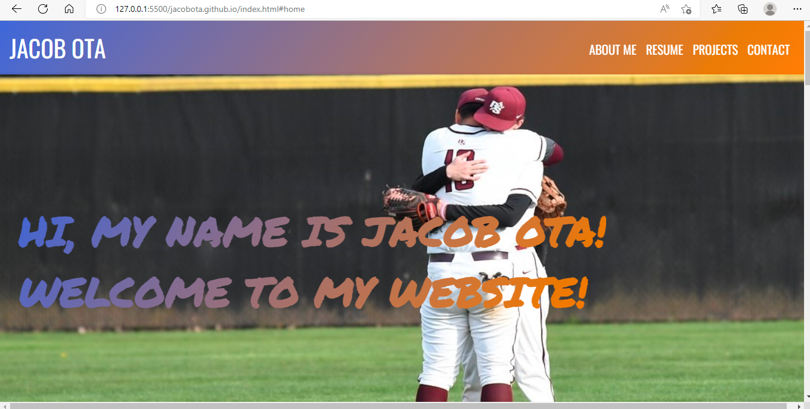
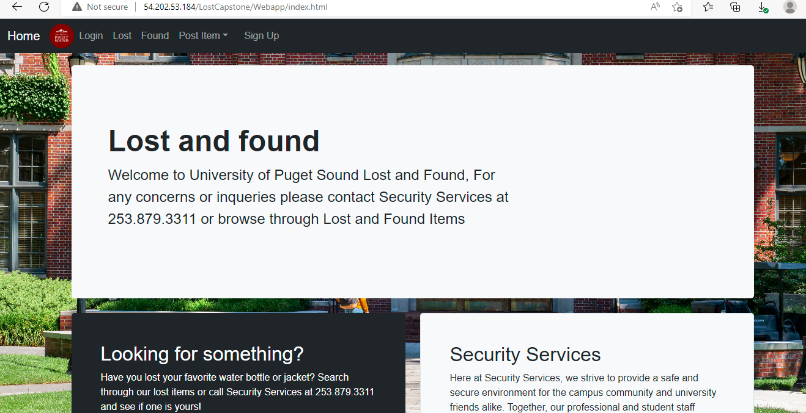
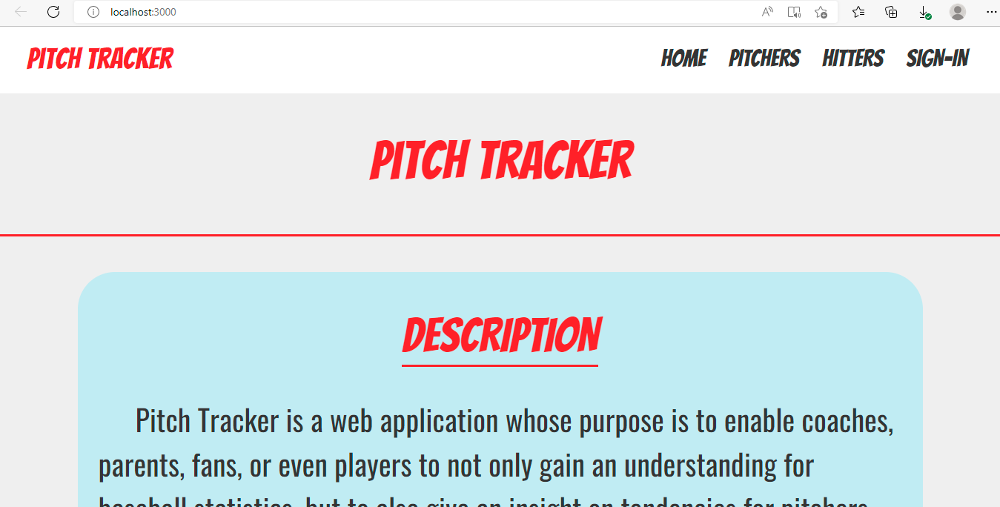
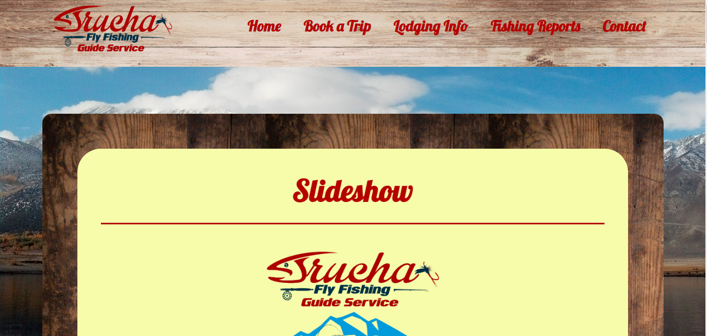

HI, MY NAME IS JACOB OTA!
WELCOME TO MY WEBSITE!
ABOUT ME
Hello, my name is Jacob Ota! I recently graduated with my B.S. in Computer Science from the University of Puget Sound (UPS). And am currently in the Masters of Software Engineering at Arizona State University (ASU).
I actually switched my major to Computer Science before my junior year of college. I instantly fell in love with it. The open-endedness, puzzle-solving aspect, and being able to see the final product of my creation not only mad me proud of what I can create, but also challeneged me to get better and keep learning.
While completing my Computer Science major within 2 years, I was also challenged with balancing a Resident Assistant (RA) job and playing collegiate baseball. Personally, I feel like this balance taught me a lot about how to manage my time wisely. As an RA, I was tasked with the care of residents, dealing with roommate conflicts, and how to help individuals going through tough times.
As a baseball player, I learned what hardwork, adversity, and most importantly, what resiliency truly means. As a junior, I had a season ending injury that knocked me down and gave me little hope to getting back on the field given I had a year left and recovery was around 4/5 months, but through the hard work I put in through my rehab process I was able to come out more resilient than ever and I found out what I can do when I don't give up on myself.
With how recent I changed to this new career path, I haven't truly given myself the opportunity to apply myself in any real-world experience with this field. However, I believe I am ready for this opportunity and am currently looking for an opportunity as an entry level software engineer to not only further my knowledge, but to also gain some experience in this field.
RESUME

PROJECTS
Project #1
My Website: After finishing college, I decided to create myself my own website. Using HTML, CSS, Javascript and the Bootstrap framework I was able to put together this website to showcase myself, my resume, and other projects.
Project #2
Capstone Project: With a group we created a Lost and Found web application that would connect users to help users return their lost or found items. Working for the frontend side of this project I was tasked with UI design of the profile page and navigation bar using the Bootstrap framework.
Project #3
Pitch Tracker: My first time using and learning through React to create an app. This web app is used to track stats, tendencies of pitchers and hot zones of hitters to be analyzed by coaches, parents, fans and players to hopefully benefit the players and give an insight into stats and tendencies. Code on my Github.
Project #4
Trucha Fly Fishing Website: Currently in the works. I was tasked by Trucha Fly Fishing Guide Services to create a website for the owner. Using React again to further my knowledge of the tool, and first time being tasked outside of school or myself to work on a project. Code on Github.
CONTACT
(714)-881-9582